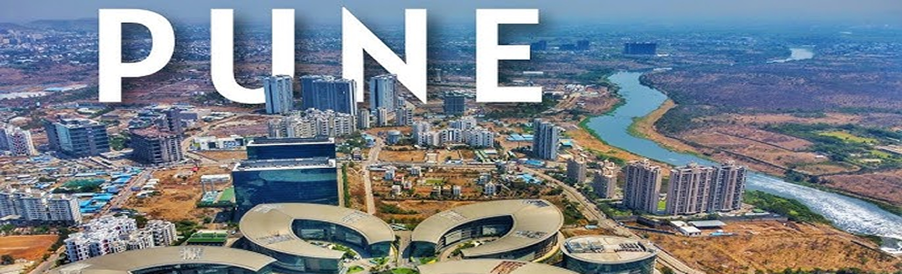
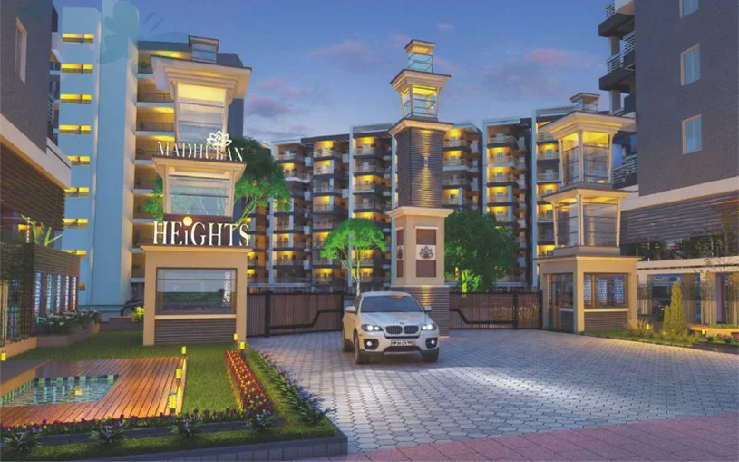

Kolkata, formerly known as Calcutta, is the capital city of the Indian state of West Bengal, located in eastern India along the eastern bank of the Hooghly River. The city is part of the lower Ganges Delta and lies at an average elevation of approximately 9 meters (30 feet) above sea level. It was founded as an important trading post of the British East India Company and served as the capital of British India until 1911.
Area: Approximately 206 Square Kilometres
Often referred to as the “Cultural Capital of India,” Kolkata is known for its deep-rooted traditions in literature, art, theatre, cinema, and intellectual thought. The city showcases a distinctive blend of colonial-era architecture, historic landmarks, vibrant markets, and growing modern business districts. Landmarks such as Howrah Bridge, Victoria Memorial, Indian Museum, and Mother House reflect Kolkata’s rich historical and cultural legacy.
Summer: March–June (Up to 42°C)
Monsoon: June–September (Heavy Rainfall)
Winter: December–February (12°C–20°C)
Best Time: October to March
Time Zone: IST (UTC +5:30)
Population: ~4.9 Million (City)
Languages: Bengali, Hindi, English, Urdu
Literacy: 88%
Republic Day: 26th Jan
Independence Day: 15th Aug
Gandhi Jayanti: 2nd Oct
Major Festivals: Durga Puja, Kali Puja, Diwali, Eid, Christmas, Saraswati Puja, Holi, Rath Yatra, Chhath Puja, Poila Boishakh, Vishwakarma Puja, Janmashtami
Police: 100
Fire: 101
Ambulance: 102
Women Helpline: 1091
General Info: +91 88888 88888

Kolkata’s residential market is diverse, offering a mix of heritage-style homes, independent houses, modern high-rise apartments, and luxury gated communities. Rental demand has grown steadily in recent years, driven by expanding IT and business hubs in Salt Lake Sector V, New Town, and Rajarhat.
While central Kolkata remains densely populated and congested, suburban developments provide better urban planning, cleaner surroundings, and improved infrastructure. Although the city has extensive public transportation—including metro rail, buses, ferries, and auto rickshaws—expatriates typically prefer chauffeur-driven cars for comfort, convenience, and safety. Traffic congestion is common during peak hours, especially near commercial districts, bridges, and older neighbourhoods.
Preferred expatriate and premium residential areas include:
Planned & IT Corridors: Salt Lake
(Bidhannagar), New Town, Rajarhat
Upscale Central & South Areas: Ballygunge,
Alipore, Park Street, Camac Street
Residential Green Zones: Tollygunge, Jodhpur
Park
Emerging expatriate-preferred zones include Action Area I, II, and III in New Town, which offer new residential projects, international schools, and convenient airport access.
Kolkata offers a wide selection of premium hotels and serviced residences suitable for short-term stays. Demand increases significantly during major festivals such as Durga Puja and Diwali, so advance reservations are strongly recommended.
Popular options include ITC Royal Bengal, The Oberoi Grand, JW Marriott Kolkata, Taj Bengal, Hyatt Regency, and Novotel Kolkata (New Town).
Long-term housing options include independent houses, modern gated communities, and high-rise apartment complexes. Gated communities— primarily located in New Town, Rajarhat, and Salt Lake—typically provide 24-hour security, power backup, clubhouses, gyms, swimming pools, landscaped gardens, and in-house convenience stores.
Independent houses, more common in South Kolkata and older localities, offer greater privacy and space but may require private arrangements for security and maintenance. Villa communities are gradually emerging in the Rajarhat–New Town belt, combining independent living with community amenities.
Breakdown of available properties:
Availability: Moderate.
Types: Detached (~30%), Semi-detached
(~70%).
Style: 3–4 bedroom bungalows with balconies,
living and dining areas, and gardens in select localities.
Average Age: 15–20 years.
New Construction (<5 years): ~10%, mainly in
Rajarhat and New Town.
Availability: Good across the city.
Building Type: Small buildings (~50%), Large
high-rise complexes (~50%).
Style: One master bedroom with 2–3 additional
bedrooms, attached bathrooms, modular kitchen, and living/dining
spaces.
Average Age: 5–12 years.
New Construction (<5 years): ~25%, primarily
in New Town, Sector V, and EM Bypass areas.
Kolkata’s apartment growth is largely driven by IT sector expansion and improved airport connectivity, making modern residential complexes popular among expatriates and corporate professionals.
Serviced apartments in Kolkata are generally categorized as follows:
A. Professionally Managed Serviced Apartments
• Located near business districts such as Salt Lake Sector V,
New Town, and Park Street, offering housekeeping, security,
Wi-Fi, laundry, and front-desk services.
B. Standalone Serviced Apartments
• Found in residential neighbourhoods like Ballygunge,
Tollygunge, and Lake Gardens; quality and service levels may
vary.
C. Guest Houses
• Widely available but generally not recommended for expatriates
due to shared facilities and inconsistent standards.
Always verify internet stability, security systems, housekeeping standards, and laundry and kitchen services before finalizing serviced accommodation.
In Kolkata, standard refundable security deposits usually range from 2 to 3 months’ rent. Some premium gated communities may require deposits of up to 4 months, depending on amenities and landlord expectations.
Confirm whether rent includes society maintenance or clubhouse charges. Utility connections are usually arranged by the landlord, while monthly usage is paid directly by the tenant.
Furniture and appliance leasing services are available through online platforms and local vendors, offering flexible short-term and long-term rental options. Most vendors provide delivery, installation, and basic maintenance services.
Kolkata has a well-established financial and banking infrastructure, supported by public-sector banks, private-sector banks, and a limited presence of international banks. The city offers comprehensive banking, foreign exchange, ATM, and digital payment services that cater to residents, expatriates, and business professionals.
The official unit of currency in India is the Indian Rupee (INR).
Credit cards are widely accepted in Kolkata, particularly in shopping malls, branded retail outlets, restaurants, cafés, hotels, and online services.
Most Indian banks issue credit cards with revolving credit limits and cash advance facilities.
RuPay, VISA, and MasterCard are commonly accepted. American Express acceptance is limited and usually restricted to select premium hotels and high-end establishments.
Note: International credit card transactions may attract foreign currency conversion or processing fees. Please confirm applicable charges with your card provider.
Kolkata has a strong and well-distributed ATM network across residential neighbourhoods, commercial districts, and business hubs.
Traveller’s cheques can be purchased or encashed at major public and private banks, as well as authorised money changers in Kolkata.
Commonly available currencies include US Dollar and British Pound Sterling, with other major currencies available at select banks.
A valid passport is required when purchasing or encashing traveller’s cheques.
Kolkata hosts all major Indian public-sector and private-sector banks, along with branches of select international banks.
Typical Banking Hours:
Most banks operate between 10:00 – 16:00 on weekdays, though
timings may vary slightly by branch.
Under Indian Foreign Exchange and Income Tax regulations, foreign nationals employed in India are generally permitted to open one bank account per city.
Relocation consultants or corporate HR teams can assist in opening the following account types:
Documentation requirements vary by bank but typically include:
Bank account activation typically takes 2 to 10 working days, subject to verification. ATM/debit cards are issued upon request.
Most major banks in Kolkata provide secure and reliable internet and mobile banking services, including:
Digital banking services are widely adopted and supported by strong financial and telecommunications infrastructure across the city.
Common health risks in Kolkata include dengue fever, malaria, typhoid, hepatitis A and B, cholera, diarrhoeal diseases, and seasonal influenza. Mosquito-borne illnesses are more prevalent during and after the monsoon season, particularly in low-lying or waterlogged areas.
Kolkata’s air quality can fluctuate due to traffic congestion and industrial activity, which may affect individuals with asthma or other respiratory conditions.
It is strongly recommended to ensure that all routine vaccinations are up-to-date prior to arrival, especially for long-term residents and families.
In a medical emergency, it is essential to know the nearest hospital. Traffic congestion and narrow lanes in certain parts of Kolkata may delay ambulance response times.
Many expatriates prefer using private vehicles or app-based taxi services such as Uber or Ola for quicker transportation during emergencies. Always carry personal identification, including your passport, visa, or Residential Permit (RP).
Kolkata has a strong private healthcare network with modern medical infrastructure and experienced, English-speaking doctors in most premium hospitals.
Medical treatment costs are generally affordable compared to Western countries, while maintaining high standards of care and advanced diagnostic facilities.
Most medications are readily available at pharmacies throughout Kolkata, and many essential medicines can be purchased over the counter. Certain antibiotics and regulated drugs may require a valid prescription.
If you take regular or long-term medication, inform your doctor to avoid potential drug interactions. Keep copies of prescriptions, especially for chronic conditions.
West Bengal Emergency Ambulance Service: 108
Some private hospitals also provide paid ambulance services for faster response.
Kolkata Police Emergency Number: 100
Women’s Helpline: 1091
Tourist Assistance (Kolkata Police): 98308 11111
Education in Kolkata is available from Kindergarten through Higher Education. Early education for young children primarily follows the kindergarten model, while primary and secondary education is offered through a wide range of state, national, and international education boards.
Schools in Kolkata are affiliated with various boards including West Bengal Board of Secondary Education (WBBSE), Central Board of Secondary Education (CBSE), Council for the Indian School Certificate Examinations (CISCE – ICSE & ISC), National Institute of Open Schooling (NIOS), Cambridge Assessment International Education (IGCSE), and the International Baccalaureate (IB) .
After completing secondary education, students progress to Higher Secondary (Grades 11 and 12) or equivalent pre-university programs, enabling entry into colleges, universities, and professional courses. Kolkata offers a broad range of higher education institutions, postgraduate programs, research centers, and professional certifications.
Kolkata’s role as a cultural, educational, and emerging business hub has led to a steady increase in international schools serving expatriate and NRI families. These schools welcome students of all nationalities and reflect global diversity in curriculum and teaching methodology.
Educating children in Kolkata offers exposure to a rich blend of Indian traditions and global cultures, making it a rewarding experience for expatriate families.
Kolkata’s international business presence and cultural exchange programs have increased demand for foreign language learning. The city hosts several reputed institutes offering instruction in global and Indian languages.
Electricity in Kolkata is supplied primarily by Calcutta Electric Supply Corporation (CESC). Electricity charges are moderate and vary based on consumption slabs.
Water supply in independent houses is managed by the Kolkata Municipal Corporation (KMC). Monthly water bills specify the due date for payment.
Door-to-door garbage collection is available in most areas of Kolkata, usually on a daily basis. Solid waste management and street cleaning are handled by the Kolkata Municipal Corporation.
Bottled LPG is supplied by government-authorised providers including:
New connections require a refundable security deposit and submission of proof of address and identification. Most households maintain two cylinders to ensure uninterrupted supply.
Kolkata’s tropical climate makes regular pest control essential to prevent cockroaches, mosquitoes, flies, and other insects. Many professional pest control services operate across the city.
Recommendation: Conduct pest control every 3–6 months and ensure that WHO-approved chemicals are used, particularly in homes with children or pets.
Once you move into your residence in Kolkata, local cable network personnel usually visit the property to set up your cable television connection. A nominal one-time installation fee is charged.
Installation generally takes 2–3 days. Thereafter, a monthly subscription fee is payable in cash or online, and a receipt is issued by the cable operator for each payment.
Cable television services provide access to a wide range of national and international channels including STAR, ESPN, HBO, National Geographic, Discovery , along with Hindi, Bengali, and other regional channels.
For a complete and updated channel list, it is advisable to check directly with your local cable operator.
Direct-To-Home (DTH) satellite television services are widely available across Kolkata. Popular service providers include:
DTH services involve a one-time setup cost covering the dish antenna, receiver, and an initial subscription package. Installation typically takes 2–5 working days, depending on technician availability.
DTH providers offer standard-definition and HD channels across multiple languages. Subscription packages can be customised based on viewing preferences, and authorised dealers are available through local electronics outlets and online service platforms such as Sulekha and Justdial.
Kolkata has numerous FM and AM radio stations that broadcast free of charge. Listeners can tune in using standard radio receivers, car audio systems, or online streaming platforms.
Popular FM stations include Radio Mirchi, Red FM, BIG FM, Radio City, and All India Radio FM . Programming includes news, music, talk shows, and entertainment content in Bengali, Hindi, and English.
Kolkata offers a wide selection of daily newspapers in Bengali and English.
Popular Bengali dailies include:
Popular English dailies include:
Newspapers can be subscribed to through local distributors, purchased from neighbourhood stalls, or accessed via online and digital editions.
Post offices are conveniently located throughout Kolkata, often close to residential areas, and provide a comprehensive range of postal and financial services through India Post.
General Post Office (GPO), Kolkata:
16, Netaji Subhas Road, Kolkata – 700001
Phone: 033-2248 0156
For premium postal services such as Speed Post, Business Post, and EMS, facilities at major post offices like the Kolkata GPO offer value-added services and online tracking.
Postal services available include:
For accurate information on service availability, delivery timelines, and applicable rates, it is recommended to visit your nearest post office or consult official India Post resources.

Telephone and internet services in Kolkata are widely available through both government-owned and private telecommunications providers, with good coverage across residential, commercial, and business areas.
Landline telephone services are provided by BSNL (government-owned) and private operators such as Airtel, Vodafone Idea (Vi), and Jio.
Installation timelines vary by provider. BSNL landline installations generally take 7–14 days, while private providers usually complete setup within 2–5 working days.
Documents Required:
A refundable security deposit and installation charges are payable at the time of application. For private service providers, calls made beyond the deposited amount before the billing cycle ends may result in temporary disconnection.
Monthly bills are issued with a clearly mentioned due date and can be paid at service provider offices, authorised bill payment centres, or through online payment portals.
In some cases, landlords may provide a pre-installed landline connection, in which case tenants are responsible only for monthly rental and usage charges.
International calling can be activated on request at the time of subscription. Applicable tariffs should be confirmed with the service provider.
All major telecom operators in Kolkata support international calling. Users must request activation of this service during sign-up or through customer care.
The international dialling prefix used in India is 00, followed by the country code.
Public phone booths displaying PCO / STD / ISD signs are now extremely rare in Kolkata due to the widespread use of mobile phones. Residents are advised to rely on mobile or landline services for communication.
Kolkata has strong mobile network coverage with major GSM service providers including Jio, Airtel, Vodafone Idea (Vi), and BSNL.
Operators offer a wide range of prepaid and postpaid plans suitable for individual, family, and corporate usage.
Postpaid connections require an activation fee and a refundable security deposit. An additional deposit may be required for international roaming.
Prepaid SIM cards are widely available from authorised mobile retailers and local vendors across the city.
As per government regulations, activation of any new mobile connection requires submission of a valid photo ID and proof of address.
Mobile network quality and data speeds may vary by locality. Many residents compare operators using speed tests to determine the best coverage in their specific neighbourhood.
Broadband and high-speed internet services in Kolkata are offered by multiple operators, including:
Internet connections are primarily delivered through fiber-optic networks, providing stable and high-speed connectivity suitable for streaming, video conferencing, online education, and remote work.
Coverage and actual internet speeds may vary by neighbourhood. Residents commonly recommend Airtel and JioFiber for consistent performance, but it is advisable to confirm area-specific availability before finalising a connection.
Kolkata has witnessed steady growth in mobile and broadband subscriptions, with leading operators expanding 4G and 5G infrastructure to support increasing data demand and future connectivity needs.
Kolkata offers a comprehensive mix of public and private transportation options for residents, professionals, and expatriates. The city is served by app-based cabs, auto rickshaws, city buses, suburban rail, and India’s oldest metro rail system.
For expatriates and new residents, app-based cabs or chauffeur-driven vehicles are commonly preferred due to convenience, safety, and ease of navigation in dense traffic conditions.
App-based ride-hailing services are widely used across Kolkata and are considered safe and reliable for daily commuting and airport transfers.
Bookings are made through mobile applications by entering pickup and destination locations. Drivers commonly rely on Google Maps for route navigation.
Metered auto rickshaws are readily available throughout Kolkata and are well-suited for short-distance travel.
Passengers should insist on using the meter and avoid paying more than the displayed fare. If the meter is not used, it is advisable to agree on the fare before starting the journey. Most auto rickshaws operate on CNG, making them a relatively eco-friendly option.
Public bus services in Kolkata are operated by the Calcutta State Transport Corporation (CSTC) along with a large number of private operators.
The Kolkata Metro, operational since 1984, is India’s first metro rail system and remains a vital component of the city’s transport network.
The metro serves North–South and East–West corridors, connecting central, northern, eastern, and southern parts of the city.
Average daily ridership exceeds 1 million passengers, making it one of the most efficient modes of public transport in Kolkata. Ongoing Phase-2 expansions aim to improve connectivity to areas such as New Town, Salt Lake, and Howrah.
Name: Netaji Subhas Chandra Bose International
Airport
Location: Approximately 17 km from central
Kolkata
Connectivity Options:
Travel time from central Kolkata to the airport typically ranges between 45–60 minutes, depending on traffic conditions.
Car rental services in Kolkata include both self-drive and chauffeur-driven options, available through local agencies and app-based platforms.
Due to traffic density and complex road conditions, chauffeur-driven vehicles are generally recommended for expatriates and first-time residents.
Driving in Kolkata can be challenging for newcomers due to heavy traffic, narrow roads in older areas, and mixed vehicle movement.
Expatriates who plan to drive are advised to employ experienced local drivers or become familiar with local driving practices and regulations before operating a vehicle.
The Kolkata Metropolitan Development Authority (KMDA) is implementing a Comprehensive Mobility Plan (CMP) focused on integrating metro rail, buses, suburban rail, and last-mile connectivity solutions.
The plan aims to support efficient, sustainable, and seamless urban transportation through new corridors, infrastructure modernisation, and improved public transport services across the metropolitan region.
Indian nationals and foreign nationals, including persons of Indian origin, transferring their residence to Kolkata or arriving in India for employment are permitted to import personal effects and household goods into India duty-free, subject to eligibility conditions and prevailing customs regulations.
For Indian nationals, the following criteria must be fulfilled:
For foreign nationals, the following conditions apply:
Shipments dispatched beyond the prescribed timelines may be cleared only on a case-by-case basis, subject to customs approval.
It is mandatory that the owner arrives in India before the shipment. Failure to do so may result in demurrage or container detention charges.
Shipments destined for Kolkata are generally cleared at Netaji Subhas Chandra Bose International Airport for air cargo or at major Indian sea ports such as Kolkata Port / Haldia or Mumbai (JNPT), followed by inland transportation to Kolkata.
The earlier requirement of a compulsory one-year stay in India after availing Transfer of Residence (TR) benefits has been removed. Importers are permitted to leave India after claiming TR concessions.
Old and used personal effects and household goods are permitted duty-free, provided they have been used by the shipper and the individual holds a valid one-year visa.
Examples include:
The following items are permitted at a concessional customs duty rate of 15% for one unit of each item, subject to a combined value limit of ₹5,00,000 (approximately USD 10,000), irrespective of prior usage:
The concessional duty rate of 15% applies only to the first unit of each eligible item.
If additional units are imported or if the combined value exceeds ₹5,00,000, a higher customs duty of 35% will be levied on the excess quantity or value.
Import duties on alcoholic beverages, wines, and spirits are extremely high in India and are typically assessed at approximately 200% of the value as determined by customs authorities.
Kolkata has an active and welcoming expatriate community supported by global networks, local meetups, and online platforms that help newcomers socialise, build friendships, and adapt smoothly to life in the city.
One of the most established global expatriate networks in the city is InterNations – Kolkata Chapter. This vibrant community hosts regular social meetups, networking events, coffee mornings, and hobby-based gatherings, making it an excellent platform for meeting like-minded people and learning how to navigate city life.
Another popular option is Meetup – Expats in Kolkata, an open group where expatriates organise informal get-togethers such as museum visits, cultural excursions, coffee meetups, and casual social activities.
Online communities such as the “Kolkata Expat Circle” on Reddit also play an important role. Weekly discussion threads allow expatriates and locals to ask questions, share recommendations, seek company for outings, and connect with others in similar situations.
Kolkata offers a rich blend of cultural, intellectual, and modern entertainment options. Known as India’s cultural capital, the city provides diverse opportunities for leisure, socialising, and family-friendly recreation.
From heritage clubs and shopping malls to theatres, museums, and hobby communities, expatriates can enjoy a wide variety of activities suited to different lifestyles.
Kolkata’s cultural heritage is reflected in its museums, science centres, and artistic spaces that offer enriching experiences for all age groups.
The city hosts numerous auditoriums and venues dedicated to theatre, music, dance, and cultural performances.
Kolkata has a strong culture of grassroots, interest-based communities that allow expatriates to connect organically with locals and fellow expats.
Many of these groups are organised through social media platforms, local community centres, or cultural institutions. Expatriates often highlight these communities as one of the best ways to form genuine connections and explore Kolkata’s rich cultural life.
Shopping in Kolkata is a dynamic experience where colonial heritage, Bengali culture, and modern retail coexist seamlessly. The city offers a rich mix of historic bazaars, traditional street markets, cultural craft hubs, and contemporary shopping malls catering to both bargain hunters and lifestyle shoppers.
From bustling wholesale markets and famous book streets to premium malls featuring global brands and multiplex cinemas, Kolkata provides diverse retail options reflecting its cultural depth and evolving urban lifestyle.
Shopping districts are spread across central Kolkata, traditional neighbourhoods, and newer areas such as Salt Lake, EM Bypass, and Howrah, offering everything from street-level bargains to polished mall experiences.
A historic enclosed market in the heart of the city, surrounded by busy street stalls. New Market is known for its vast variety of products, including clothing, accessories, cosmetics, food items, and specialty shops. Expect heavy crowds and limited parking, but unmatched local flavour and value.
One of Kolkata’s largest and oldest wholesale markets, Burrabazar offers an enormous range of goods and is especially vibrant during festive seasons. It remains a key destination for traders, bulk buyers, and bargain seekers.
A well-known traditional shopping area popular for textiles, clothing, and affordable street-level bargains. The market reflects the classic Kolkata shopping atmosphere with busy lanes and strong scope for negotiation.
A world-famous hub for new and used books, stationery, and academic materials. Ideal for students, researchers, and book lovers, College Street is renowned for both rare titles and budget-friendly finds.
A long-established retail area known for sarees, textiles, jewellery, and everyday fashion. Gariahat blends local boutiques with street vendors and offers an authentic glimpse into Kolkata’s shopping culture.
Dedicated cultural markets showcasing handicrafts, handloom textiles, artwork, and regional products. These spaces are ideal for souvenirs, gifts, and traditional décor, and are often less crowded and more curated than the city’s busiest markets.
In addition to major markets, most residential neighbourhoods in Kolkata feature local shopping streets offering groceries, daily essentials, pharmacies, and convenience stores.
One of Kolkata’s largest malls, located in the southern part of the city. It houses a wide range of international and national brands, dining outlets, and a multiplex cinema, making it a popular weekend destination.
A premium shopping destination launched in 2013, Quest Mall features upscale retail brands, food courts, and entertainment options including a multi-screen cinema. It is a favourite for luxury shopping and leisure.
A major shopping complex offering a balanced mix of brands, boutiques, and family-friendly retail spaces. City Centre is well-suited for everyday shopping with a refined mall environment.
A well-established mall on Manicktala Road featuring popular apparel brands, a cinema, food outlets, and gaming zones. It caters well to families, students, and mid-range shoppers.
Located along the Hooghly River in Howrah, this mall is known for its scenic setting, strong retail presence, and cinema. It is a popular option for shoppers and families on the western side of the city.
Kolkata’s shopping landscape offers a well-rounded blend of traditional craftsmanship, street-level bargains, and modern retail experiences, allowing residents and expatriates to explore everything from historic bazaars and cultural markets to premium lifestyle destinations.